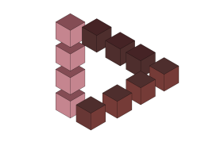
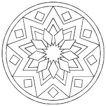

submodulo 1- realiza ilustraciones
donde podremos ilustrar con colores y crear lo que imagines
submodulo 2- realiza objetos vectoriales
donde convertimos las imagenes en vectores para no perder calidad en ellas
submodulo
3- crea graficos para animacion
ver como crear
graficos, elementos de animacion
Acontinuacion veras algunos pasos para realizar dos de los trabajos.
En este semestre aprendimos a usar la herramienta bezier donde pudimos crear muchas ilustraciones, asi como tambien utilizamos el espacio de trabajo llamado INKSCAPE donde se encontraban muchas herramienas para crear diseños.
Si eres nuevo en el proceso de creacion de graficos vectoriales puede que te sientas extraño pero enseguida te sorprenderas de la flexibilidad y de la potencia que te ofrece Inkscape.
Acontinuacion veras algunos ejemplos de lo realizado en el modulo
|
|
|
|
 |
 |